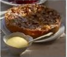

Apple Bavarian Torte (★★★★)
A classic European torte baked in a springform pan. Cream cheese, sliced almonds, and apples make this the perfect holiday treat (12 servings).
INGREDIENTS
- 1/2 cup butter
- 1/3 cup white sugar
- 1/4 teaspoon vanilla extract
- 1 cup all-purpose flour
- 1 (8 ounce) package cream cheese
- 1/4 cup white sugar
- 1 egg
- 1/2 teaspoon vanilla extract
- 6 apples peeled, cored, and sliced
- 1/3 cup white sugar
- 1/2 teaspoon ground cinnamon
- 1/4 cup sliced almonds
DIRECTIONS
1. Preheat oven to 450 degrees F (230 degrees C).
2. Cream together butter, sugar, vanilla, and flour.
3. Press crust mixture into the flat bottom of a 9-inch springform pan. Set aside.
4. In a medium bowl, blend cream cheese and sugar. Beat in egg and vanilla. Pour cheese mixture over crust
5. Toss apples with sugar and cinnamon. Spread apple mixture over all
6. Bake for 10 minutes. Reduce heat to 400 degrees F (200 degrees C) and continue baking for 25 minutes
7. Sprinkle almonds over top of torte. Continue baking until lightly browned. Cool before removing from p
mpan
REVIEWS
- ★★★★
4 stars I loved the buttery taste of the crust which complements the apples very nicely. -- Reviewed on Sep. 22, 2010 by MMASON -
★★★★
Nothing special. I like the crust, but there was a little too much of it for my taste, and I liked the filling but there was too little of it. I thought the crunchy apples combined with the sliced almonds detracted from the overall flavor-Reviewed on Sep 1, 2010 by GLENDACHEF -
★★★★
Delicious!! I recommend microwaving the apples for 3 minutes before baking, to soften them. Great dessert - I'll be making it again for the holidays. Reviewed on August 28, 2010 by BBABS -->